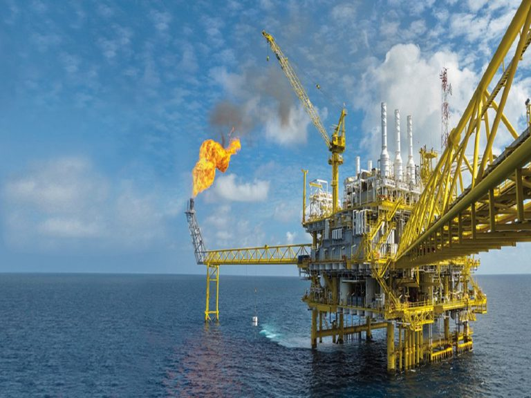

A Fenix 2002 oferece serviços de consultoria para diversos areas da exploração de oleo e gas, oferecendo soluçoes construidas especificamente para solucionar problemas complexos relacionados a area.

Geralemnte as soluçoes desenvolvidadas são executadas em forma de P&D(pesquisa e desenvolvimento), com grandes operados da area de oleo e gas